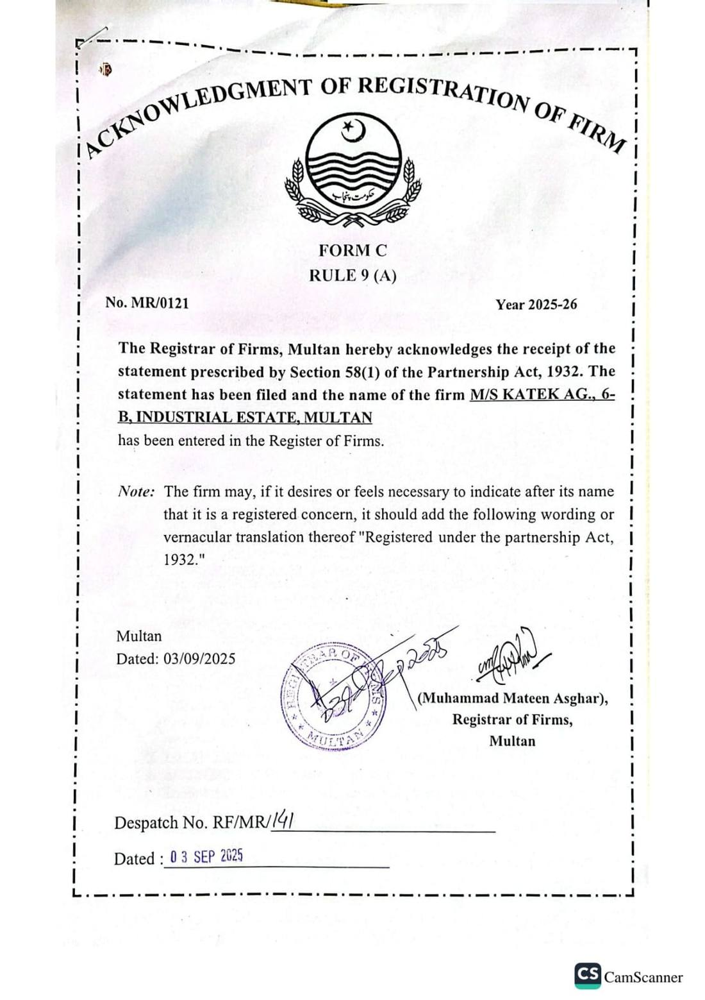
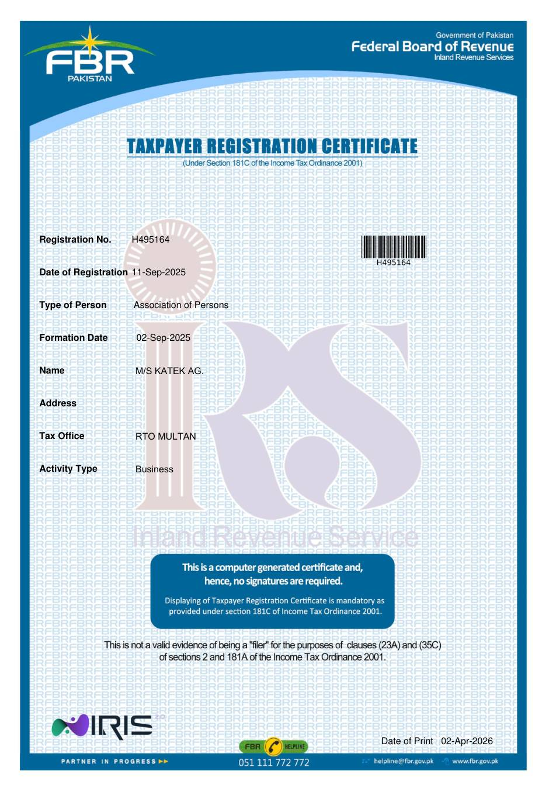

The bag, the bottle, and the uniform.بوری، بوتل اور لباس۔

Pakistanپاکستان
Katek Organic Fertilizersکیٹک نامیاتی کھادیں
زرخیز مستقبل کی ضمانتA fertile future, guaranteed.
A complete range of liquid and pellet fertilisers for home gardeners, landscapers, and commercial growers.گھریلو باغبانوں، لینڈ سکیپ والوں اور تجارتی کاشتکاروں کے لیے مائع اور دانے دار کھادوں کی مکمل رینج۔
Four colours, one brandچار رنگ، ایک نشان
The leaf, the crop, and the field.پتا، فصل اور کھیت۔
The short bar under the name.نام کے نیچے چھوٹی پٹی۔
Observed one layer at a time.ایک ایک تہہ کر کے دیکھی گئی۔
Layer by layerتہہ در تہہ

Surfaceسطح
Straw and mulch keep the sun off the soil.پرالی اور ملچ دھوپ کو مٹی سے دور رکھتے ہیں۔
Topsoilاوپری مٹی
Dark, crumbly soil where the feed first lands.گہری بھربھری مٹی جہاں خوراک پہلے گرتی ہے۔
Rootsجڑیں
The living net that takes the nutrients down.زندہ جال جو غذائی اجزا نیچے لے جاتا ہے۔
Deeper groundگہری زمین
Paler soil under the roots. Change here is slow.جڑوں کے نیچے ہلکی مٹی۔ یہاں تبدیلی آہستہ ہوتی ہے۔

The benchمیز
Sulfur, calcium, zinc, and moreسلفر، کیلشیم، زنک اور مزید
In the lab the same blue pack sits behind jars of sulfur, calcium, and zinc, with the liquid feeds beside them.تجربہ گاہ میں وہی نیلی بوری سلفر، کیلشیم اور زنک کے برتنوں کے پیچھے ہے، اور مائع خوراک ان کے ساتھ۔
Growing, day by dayدن بہ دن نشوونما

A small seedling.چھوٹی پنیری۔
The first true leaves.پہلے اصلی پتے۔
A fuller plant.بھرا ہوا پودا۔
The bed looks grown.کیاری بڑھی ہوئی دکھتی ہے۔
An example of four weeks in pots. It is not a promised yield.گملوں میں چار ہفتوں کی ایک مثال۔ یہ پیداوار کا وعدہ نہیں۔
Slow-release pelletsآہستہ گھلنے والے دانے
Solid fertilisers that feed beds, lawns, fruit trees, and pastures over time.ٹھوس کھادیں جو کیاری، لان، پھلدار درخت اور چراگاہ کو وقت کے ساتھ خوراک دیتی ہیں۔
Liquid rangeمائع رینج
Seaweed, kelp, potash, calcium, and all-purpose liquids between solid feeds.ٹھوس خوراک کے درمیان سی ویڈ، کیلپ، پوٹاش، کیلشیم اور ہمہ گیر مائع۔
Biological soil careحیاتیاتی زمین کی دیکھ بھال
Compost, minerals, and starters that support the soil, not only the leaf.کمپوسٹ، معدنیات اور آغاز کی خوراک جو صرف پتے کو نہیں، زمین کو سنبھالتی ہے۔
Choose your pathاپنا راستہ چنیں

In the fieldکھیت میں
A uniform the crop can recogniseایسا لباس جسے کھیت پہچان لے
Katek people in the field wear royal blue, a green leaf, and a red bar. The same three marks as the logo.کھیت میں کیٹک کے لوگ شاہی نیلا، سبز پتا اور سرخ پٹی پہنتے ہیں۔ وہی تین نشان جو نشانِ تجارت پر ہیں۔
Machineryمشینری
The same colours on the spreaderوہی رنگ اسپریڈر پر
Tractors and spreaders working the crop carry Katek blue, green rims, and a red stripe, moving through the natural waves of the field.فصل میں کام کرنے والے ٹریکٹر اور اسپریڈر کیٹک کا نیلا، سبز رم اور سرخ پٹی لیے کھیت کی قدرتی لہروں میں چلتے ہیں۔


The bag and the bottleبوری اور بوتل
Products that wear the brandمصنوعات جو نشان پہنتی ہیں
Pellets and liquids leave the store in Katek blue, with the leaf and the red bar. The name on the pack is the name on the uniform.دانے اور مائع کیٹک کے نیلے رنگ میں نکلتے ہیں، پتے اور سرخ پٹی کے ساتھ۔ پیک پر وہی نام ہے جو لباس پر ہے۔
See the rangeرینج دیکھیںRegistered in Multanملتان میں رجسٹرڈ
Partnershipشراکت
MR/0121
Registered under the Partnership Act, 1932, with the Registrar of Firms, Multan, on 3 September 2025.3 ستمبر 2025 کو رجسٹرار آف فرمز، ملتان کے پاس شراکت ایکٹ 1932 کے تحت درج۔
FBRایف بی آر
H495164
Taxpayer registration for M/S Katek AG. An association of persons. Income tax active at RTO Multan.ایم/ایس کیٹک اے جی کا ٹیکس رجسٹریشن۔ افراد کی انجمن۔ آر ٹی او ملتان میں انکم ٹیکس فعال۔
Worksدفتر
6-B6-بی
Industrial Estate, Multan. The name on the register is M/S Katek AG.انڈسٹریل اسٹیٹ، ملتان۔ رجسٹر پر نام ایم/ایس کیٹک اے جی ہے۔


Featured productsنمایاں مصنوعات
All home productsتمام گھریلو مصنوعاتLatest newsتازہ خبریں
All newsتمام خبریںLet us make your blendہم آپ کی ملاوٹ بنائیں
Commercial growers can ask for a blend matched to crop and soil. There is no checkout on this site.تجارتی کاشتکار فصل اور زمین کے مطابق ملاوٹ مانگ سکتے ہیں۔ اس سائٹ پر چیک آؤٹ نہیں۔
Custom blendحسبِ ضرورت ملاوٹ